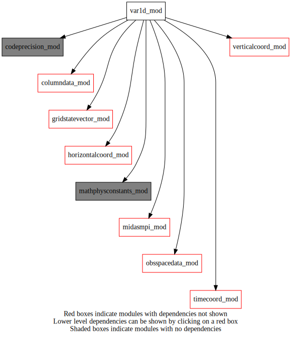
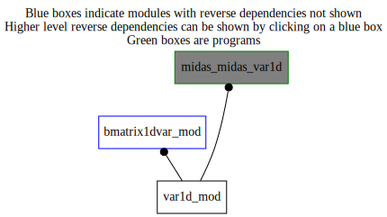

Dependency Diagrams:
 Direct Dependency Diagram¶
 Reverse Dependency Diagram¶
Description
MODULE var1D_mod (prefix=’var1D’ category=’4. Data Object transformations’)
- Purpose
contains all 1Dvar-related methods.
Quick access
- Variables
- Routines
var1d_finalize(),var1d_setup(),var1d_transfercolumntoygrid()Needed modules
columndata_mod: MODULE columnData_mod (prefix=’col’ category=’6. High-level data objects’)
gridstatevector_mod: MODULE gridStateVector_mod (prefix=’gsv’ category=’6. High-level data objects’)
horizontalcoord_mod: MODULE HorizontalCoord_mod (prefix=’hco’ category=’7. Low-level data objects’)
midasmpi_mod: MODULE midasMpi_mod (prefix=’mmpi’ category=’8. Low-level utilities and constants’)
obsspacedata_mod: MODULE obsSpaceData_mod (prefix=’obs’ category=’6. High-level data objects’)
timecoord_mod: MODULE timeCoord (prefix=’tim’ category=’7. Low-level data objects’)
verticalcoord_mod: MODULE verticalcoord (prefix=’vco’ category=’7. Low-level data objects’)
codeprecision_mod: MODULE codePrecision_mod (prefix=’pre’ category=’8. Low-level utilities and constants’)
mathphysconstants_mod: MODULE MathPhysConstants_mod (prefix=’mpc’ category=’8. Low-level utilities and constants’)Variables
- var1d_mod/var1d_validheadercount [integer,public]¶
taille effective de var1D_validHeaderIndex
- var1d_mod/var1d_validheaderindex (*) [integer,allocatable/public]¶
pointeur vers les colonnes assimilables pour minimiser la taille du vecteur de controle
Subroutines and functions
- subroutine var1d_mod/var1d_setup(obsspacedata)¶
- Purpose
to setup var1D module
- Arguments
obsspacedata [struct_obs ,in]
- Called from
- Call to
- subroutine var1d_mod/var1d_finalize()¶
- Purpose
to deallocate memory used by internal module structures
- Called from
- subroutine var1d_mod/var1d_transfercolumntoygrid(statevector, obsspacedata, column, varlist)¶
- Purpose
to transfer content of a columndata object to a statevector object without interpolation (to be used in 1DVar mode to write increments on Y grid).
- Arguments
statevector [struct_gsv ,inout]
obsspacedata [struct_obs ,in]
column [struct_columndata ,inout]
varlist (*) [character ,in]
- Called from
- Call to
hco_setupygrid(),gsv_allocate(),tim_getdatestamp(),obs_headelem_r(),gsv_getnumlevfromvarname(),col_getcolumn()
{kind=link}
{kind=link}